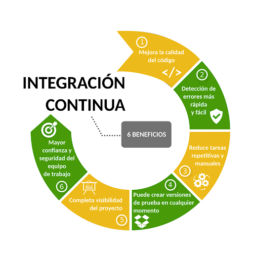
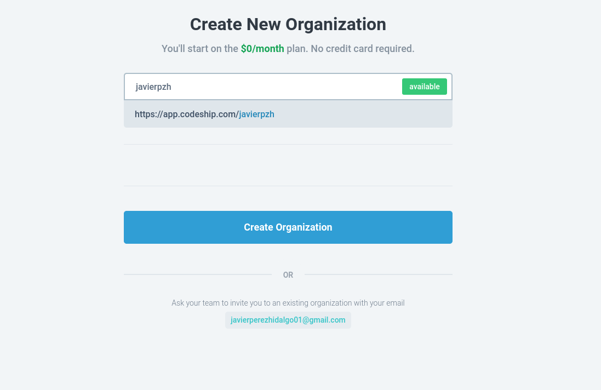
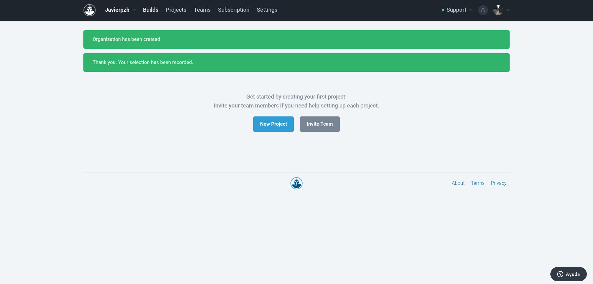
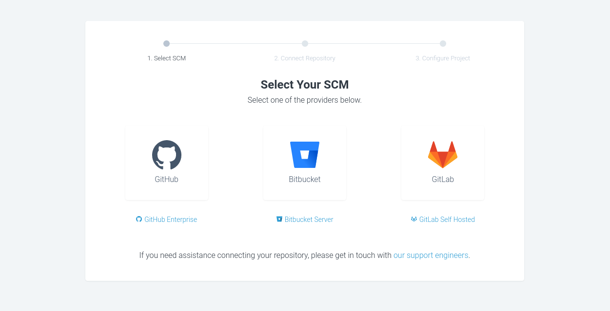

En esta práctica investiga como generar una página web estática con la herramienta que elegiste en la práctica 1 de la asignatura y desplegarla en el servicio que utilizaste en esa práctica.
-
En el repositorio GitHub/GitLab sólo tienen que estar los ficheros markdown.
-
La página se debe generar en el sistema de integración continúa, por lo tanto debemos instalar las herramientas necesarias.
-
Investiga si podemos desplegar de forma automática en el servicio elegido (si es necesario cambia el servicio de hosting para el despliegue).
En este artículo vamos a ver una pequeña introducción a la integración y el despliegue continuo.
Primeramente vamos a ver qué es esto de la integración y el despliegue continuo.
- Integración continua (IC) / Continuous integration (CI): es el nombre que se le da a la automatización de las labores de compilación, test y análisis estático del código. Consiste en hacer integraciones automáticas de un proyecto lo más a menudo posible para así poder detectar fallos cuanto antes. Entendemos por integración la compilación y ejecución de pruebas de todo un proyecto.

-
Entrega continua (EC) / Continuous delivery (CD): sería el siguiente paso. En realidad se puede considerar una extensión de la Integración Continua, en la cuál, el proceso de entrega de software se automatiza para permitir implementaciones fáciles y confiables en la producción, en cualquier momento.
-
Despliegue continuo (DC) / Continuous deployment (CD): en este punto ya no hay intervención humana, sino que la automatización es el eje central. Para lograr este propósito, el pipeline de producción tiene una serie de pasos que deben ejecutarse en orden y de forma satisfactoria. Si alguno de estos pasos no finalizan de forma esperada, el proceso de despliegue no se llevará a cabo.

Explicados los diferentes conceptos, vamos a realizar una pequeña práctica que trata sobre generar una página web estática (en mi caso voy a automatizar el despliegue de este blog) que conste de despliegue continuo.
En mi caso, he decidido utilizar la herramienta llamada CodeShip para llevar a cabo este proceso. También necesitaremos un repositorio de GitHub, donde iremos guardando las distintas informaciones que se irán desplegando en nuestra nueva web.
Como servicio de hosting he elegido Surge ya que es gratuito y ya tengo experiencia previa con él.
Una vez presentada la práctica vamos a empezar el proceso.
El primer paso que debemos realizar es la creación del repositorio que vayamos a utilizar. Una vez creado, vamos a dirigirnos a la web de CodeShip y nos registraremos.

En mi caso lo hago mediante mi cuenta de GitHub y de esta manera ya vinculo ambos servicios.

Introducimos un nombre para nuestra nueva organización:

Una vez aquí ya hemos completado el proceso de registro, y vamos a hacer click en el botón New Project:


.